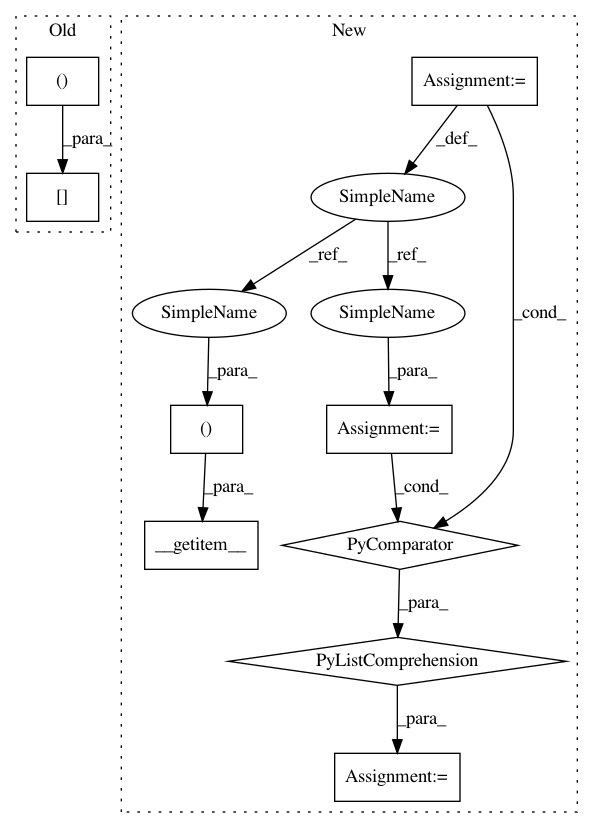

7570ee1d758c93dd4054009fc12be6cc31b54031,gpytorch/lazy/interpolated_lazy_tensor.py,InterpolatedLazyTensor,_get_indices,#InterpolatedLazyTensor#Any#Any#,261
Before Change
def _get_indices(self, left_indices, right_indices):
left_interp_indices = self.left_interp_indices[left_indices, :]
left_interp_values = self.left_interp_values[left_indices, :]
right_interp_indices = self.right_interp_indices[right_indices, :]
right_interp_values = self.right_interp_values[right_indices, :]
n_data, n_interp = left_interp_indices.size()
After Change
def _get_indices(self, left_indices, right_indices, *batch_indices):
left_interp_indices = self.left_interp_indices.__getitem__((*batch_indices, left_indices))
left_interp_values = self.left_interp_values.__getitem__((*batch_indices, left_indices))
right_interp_indices = self.right_interp_indices.__getitem__((*batch_indices, right_indices))
right_interp_values = self.right_interp_values.__getitem__((*batch_indices, right_indices))
n_data, n_interp = left_interp_indices.size()
// Batch compute the non-zero values of the outer products w_left^k w_right^k^T
left_interp_values = left_interp_values.unsqueeze(-1)
right_interp_values = right_interp_values.unsqueeze(-2)
interp_values = torch.matmul(left_interp_values, right_interp_values)
// Batch compute values that will be non-zero for row k
left_interp_indices = left_interp_indices.unsqueeze(-1).expand(n_data, n_interp, n_interp).contiguous()
right_interp_indices = right_interp_indices.unsqueeze(-2).expand(n_data, n_interp, n_interp).contiguous()
batch_indices = [
batch_index.unsqueeze(1).repeat(1, n_interp ** 2).view(-1)
for batch_index in batch_indices
]
base_var_vals = self.base_lazy_tensor._get_indices(
left_interp_indices.view(-1), right_interp_indices.view(-1), *batch_indices
)
base_var_vals = base_var_vals.view(left_interp_indices.size())
In pattern: SUPERPATTERN
Frequency: 3
Non-data size: 9
Instances
Project Name: cornellius-gp/gpytorch
Commit Name: 7570ee1d758c93dd4054009fc12be6cc31b54031
Time: 2018-11-25
Author: gpleiss@gmail.com
File Name: gpytorch/lazy/interpolated_lazy_tensor.py
Class Name: InterpolatedLazyTensor
Method Name: _get_indices
Project Name: cornellius-gp/gpytorch
Commit Name: 7570ee1d758c93dd4054009fc12be6cc31b54031
Time: 2018-11-25
Author: gpleiss@gmail.com
File Name: gpytorch/lazy/interpolated_lazy_tensor.py
Class Name: InterpolatedLazyTensor
Method Name: _get_indices
Project Name: cornellius-gp/gpytorch
Commit Name: 7570ee1d758c93dd4054009fc12be6cc31b54031
Time: 2018-11-25
Author: gpleiss@gmail.com
File Name: gpytorch/lazy/root_lazy_tensor.py
Class Name: RootLazyTensor
Method Name: _get_indices
Project Name: cornellius-gp/gpytorch
Commit Name: 7570ee1d758c93dd4054009fc12be6cc31b54031
Time: 2018-11-25
Author: gpleiss@gmail.com
File Name: gpytorch/lazy/matmul_lazy_tensor.py
Class Name: MatmulLazyTensor
Method Name: _get_indices